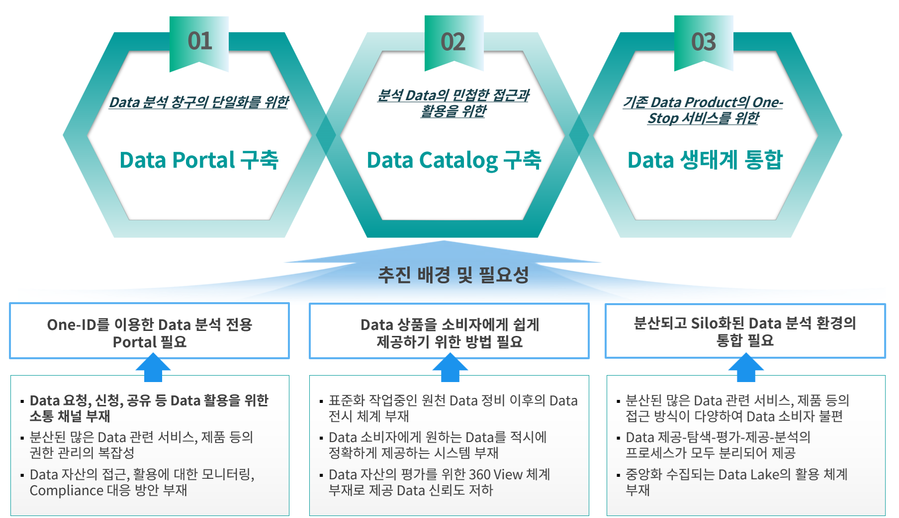

CRYSTAL DB
Crystal DB(Data Catalog)의 주요 특징
1. 데이터 자산의 검색 및 거버넌스 지원
데이터 카탈로그는 조직 내 데이터 자산의 조직화된 인벤토리로써 데이터 전문가가 검색 및 거버넌스를 지원하기위해 메타데이터를 수집,구성,접속하여 조직이 데이터를 관리하는데 도움을 줍니다.
2. 통합된 데이터 분석
내외부 다양한 출처의 데이터를 통합해 비즈니스 및 시장에 대한 정확한 인사이트를 제공하고, 전략 수립에 활용할 수 있습니다.

3. 운영 효율성 개선
데이터 카탈로그는 조직 내 데이터 자산의 조직화된 인벤토리로써 데이터 전문가가 검색 및 거버넌스를 지원하기 위해 메타데이터를 수집,구성,접속하여 조직이 데이터를 관리하는데 도움을 줍니다.
4. 심층적인 인사이트 제공
고객 행동과 시장 동향을 분석해 마케팅 전략을 정교화하고, 자원을 전략적으로 배분해 ROI를 향상시킬 수 있습니다.
5. 고객 및 직원 만족도 향상
직원들은 셀프헬프 방식으로 데이터를 활용하여 업무 효율을 높일 수 있고, 고객 응대도 더 빠르고 정확하게 처리할 수 있어 전반적인 만족도가 향상됩니다.